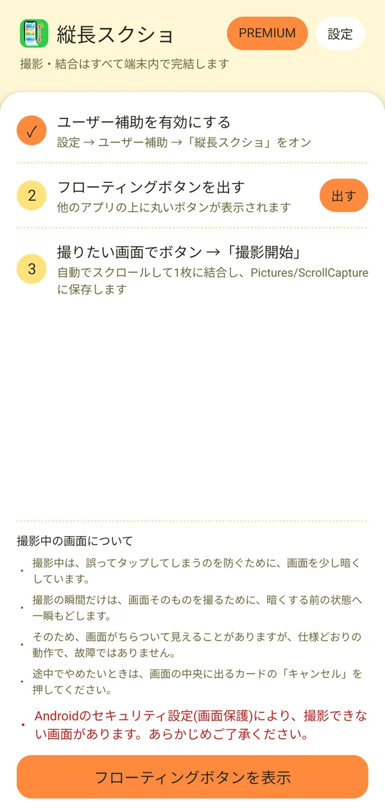

📖 はじめに
「縦長スクショ」は、Webページ・SNS・チャットの履歴・設定画面など、スクロールしないと見えない長い画面を、自動でスクロールしながら撮影して、1枚の縦長の画像につなげて保存するAndroidアプリです。
撮影も結合も保存もすべて端末の中で完結します。使い方はかんたんで、「ユーザー補助をオンにする」→「フローティングボタンを出す」→「撮りたい画面でボタンを押して撮影開始」の3ステップです。

アプリのホーム画面（3ステップで撮影の準備ができます）
🎯 やりたいことから探す
行いたい操作や目的に合わせて、各機能の解説ページへ直接移動できます。
📑 機能別マニュアル一覧
使う順番に、3つのページに分けて解説しています。
❓ 全体のよくある質問（FAQ）
Q 縦長スクショは無料で使えますか？
はい。撮影・結合・切り取り・保存の機能は、無料のまま制限なくお使いいただけます。無料版では、ホーム画面のバナー広告や、撮影後のプレビューの前に表示される広告があります。広告をなくしたい方向けに、サブスクリプションの「PREMIUM」をご用意しています。
Q 撮影した画像は外部に送信されますか？
いいえ。撮影も結合も保存も、すべて端末の中で行います。撮影した画像や画面の内容を、端末の外へ送信したり、第三者と共有したりすることはありません。
Q なぜ「ユーザー補助」の許可が必要なのですか？
画面を自動でスクロールして、画面のスクリーンショットを撮るために、Androidの「ユーザー補助サービス」を使います。「撮影開始」を押したときだけ画面を撮影します。許可をお願いする前に、アプリ内で使い道を説明しています。
Q 撮影した画像はどこに保存されますか？
端末の「Pictures/ScrollCapture」フォルダに保存されます。フォト（ギャラリー）アプリから確認できます。
Q 撮影できない画面はありますか？
はい。Androidのセキュリティ設定（画面保護）がかかっている画面は撮影できません。また、ホーム画面のようにスクロールできない画面も、縦につなげて撮影することはできません。